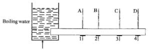
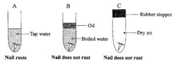

2020 BECE Science Past Questions – Paper Two
Answer Question 1 in Section A and any other three questions in Section B. Credit will be given for clarity of expression and orderly presentation of material
Section A
1.(a)In an experiment, four nails 1, 2, 3 and 4 are fixed with candle wax onto a metal bar and one end of the bar is heated by means of boiling water as shown in the diagram below
A, B, C, D are thermometers inserted in holes along the bar to measure the temperatures at the various points.
(i) What is the temperature of the boiling water?
(ii) State the observations that will be made about nails 1, 2, 3 and 4
(iii) State the observations that will be made about the temperatures recorded by thermometers A, B, C and D.
(iv) What mode of heat transfer is demonstrated in the experiment
(v) State one effect of heat that is associated with the experiment
(vi) State the aim of the experiment
[10 marks](b) In an experiment, a student took three iron nails and cleaned their surfaces dry and placed them in three separate test tubes in set-ups A, B and C as shown in the diagram.
After three days the nail in set-up A was found to have rusted while the nails in set-ups B and C did not.
(i) Why was the water inset-up B boiled?
(ii) Explain the function of the oil on top of the water in set-up B.
(iii) State the purpose of the rubber stopper in set-up C
(iv) Why did the nail in set-up A rust?
(v) Suggest an aim for the experiment.
(vi) From the experiment, explain why oil or grease is applied on the surface of a metal to preventrusting. [10 marks]
(c) In an experiment the following activities were carried out on two green leaves A and B. Leaf A was from a plant placed in the sunlight for sometime while leaf B was from a plant placed in a dark cupboard for 24 hours.
Activity
I. Leaves dipped in boiling water for 1 minute
II. Leaves dipped in warm alcohol
III. Leaves washed in cold water
IV. Leaves dipped into iodine solution
After dipping in the iodine solution, it was observed that leaf A changed colour while leaf B did not change colour. Answer the following questions:
(i) Explain why each of the activities I,II,III and IV was carried out.
(ii) Statethe colour change of leaf A
(iii) Explain why leaf A changed colour but leaf B did not.
(iv) Suggest an aim for the experiment. [10 marks]
SECTION B
[45 marks]
(ii) Friendships are destroyed when friends get suspicious of each other.
(b) (i). To acquire skills for employment.
(ii) To make friends
(c) (i) He could be violent at times. / He behaved badly. / He was disliked by his teachers.
(ii) Tono visited his former school in order to collect his certificate.
(d) He had not seen Tono in over two decades.
(e) Explain, in your own words, give another word or a phrase that means the same, and can fit into the passage;
(i) was not in the good books of teachers – The teachers were displeased with his behaviour
(ii) with the passage of time – As time proceeded.
(iii) by leaps and bounds – tremendously /Rapidly / swiftly/quickly
(f) For each of the following words, give another word or phrase that means the same, and can fit into the passage:
(i) intimate – very close / dear
(ii) adage – proverb / saying
(iii) acquire – obtain / gain
(iv) polished – refined / fine-tuned
(v) initially – From the start / At first / in the beginning
(b) He intended to keep all of their father’s wealth to himself.
(c) He helped Oliver Twist discover who his real parents were.
(e) Hyperbole
(g) An unknown reason / Nothing
(h) Euphemism
SELECTION: 1,2,3,4 1,3,4,5 1,2,4,5 1,2,3,5